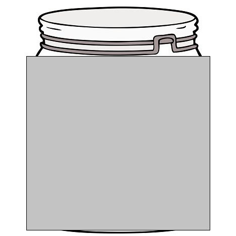
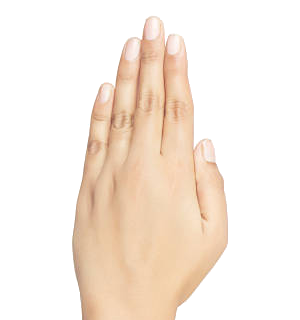
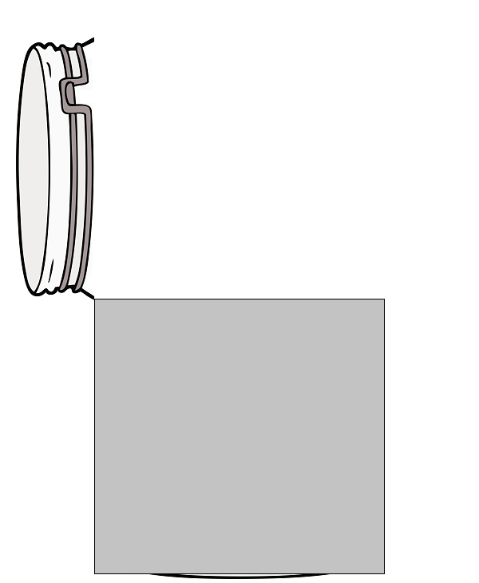

<!DOCTYPE html>
<html lang="en">
<head>
    <meta charset="UTF-8">
    <title>Beads experiment</title>
    <script src="https://unpkg.com/jspsych@7.1.2"></script>
    <script src="https://unpkg.com/@jspsych/plugin-html-keyboard-response@1.1.0"></script>
    <script src="https://unpkg.com/@jspsych/plugin-image-keyboard-response@1.1.0"></script>
    <script src="https://unpkg.com/@jspsych/plugin-preload@1.1.0"></script>
    <link href="https://unpkg.com/jspsych@7.1.2/css/jspsych.css" rel="stylesheet" type="text/css"/>

</head>
<body>
<script>

    // Creating functions. Most of these are for animations.

    function getRandomInt(max) {
    return Math.floor(Math.random() * max);
    }

    // Jar and agent coming onto the screen
    function jarAgentEnteringScreen (agent_img_path) {
        let percentage;
        for (let step = 0; step < 131; step++) {
            percentage = step / 2 - 15;
            const change_jar_on = {
                type: jsPsychHtmlKeyboardResponse,
                stimulus: `
                

                

                <p style="position:absolute; top:90%; left:50%; transform: translate(-50%, -50%);">New jar and agent</p>
                `,
                choices: "NO_KEYS",
                trial_duration: 8,
            }
            timeline.push(change_jar_on);
        }
    }

    // Jar and agent leaving the screen
    function jarAgentLeavingScreen (agent_img_path) {
        let percentage;
        for (let step = 0; step < 131; step++) {
            percentage = 50 - step / 2;
            const change_jar_off = {
                type: jsPsychHtmlKeyboardResponse,
                stimulus: `

                

                <p style="position:absolute; top:90%; left:50%; transform: translate(-50%, -50%);">New jar and agent</p>

                `,
                choices: "NO_KEYS",
                trial_duration: 8,
            }
            timeline.push(change_jar_off);
        }
    }

    function agentChoosingBeads (agent_img_path) {
        let percentage;
        for (let step = 0; step < 261; step++) {
            if (step < 131) {
                percentage = step / 2 - 10;
            } else {
                percentage = 120 - step / 2;
            }

            const agent_choosing_beads = {
                type: jsPsychHtmlKeyboardResponse,
                stimulus: `

                

                

                

                <p style="position:absolute;
                top:90%;
                left:50%;
                transform: translate(-50%, -50%);">Agent picking beads</p>

                `,
                choices: "NO_KEYS",
                trial_duration: 8,
            }
            timeline.push(agent_choosing_beads);
        }
    }

    function agent_viewing_beads(agent_img_path) {
        const agent_viewing_beads = {
            type: jsPsychHtmlKeyboardResponse,
            stimulus: `

            

            

             

            <p style="position:absolute;
            top:90%;
            left:50%;
            transform: translate(-50%, -50%);">Agent making a decision</p>

            `,
            choices: "NO_KEYS",
            trial_duration: 2000,
        }
        timeline.push(agent_viewing_beads);
    }


//////////////////////// Begin experiment timeline ///////////////////////////////

    const jsPsych = initJsPsych({
            on_finish: function(){
                jsPsych.data.displayData();
            }
        });

    let timeline = [];

    jarAgentEnteringScreen('img/faces/1.png');
    agentChoosingBeads('img/faces/1.png');
    agent_viewing_beads('img/faces/1.png')


    // jarAgentLeavingScreen();

    // const welcome = {
    //     type: jsPsychHtmlKeyboardResponse,
    //     stimulus: "Welcome to the experiment. Press any key to begin."
    // }
    // timeline.push(welcome);
    //
    // const instructions = {
    //     type: jsPsychHtmlKeyboardResponse,
    //     choices: [' '],
    //     stimulus: `
    //
    //     <p>Instructions will go here.</p>
    //
    //     <p>Press 'space' key to continue.</p>
    //
    //     `
    // }
    // timeline.push(instructions);
    //
    //
    // const jar = {
    //     type: jsPsychHtmlKeyboardResponse,
    //     stimulus: `
    //     </img>
    //     `,
    // }
    // timeline.push(jar);

    // let num_red_samples;
    // for (let iter = 0; iter < 5; iter++) {
    //     let face_path = `img/faces/${iter + 1}.png`;
    //
    //     num_red_samples = getRandomInt(6) + 1;
    //
    //     const new_trial_procedure = {
    //         type: jsPsychHtmlKeyboardResponse,
    //         stimulus: `
    //
    //
    //         `
    //
    //     }
    //
    //
    //     const test_procedure = {
    //         type: jsPsychHtmlKeyboardResponse,
    //         stimulus: `
    //         </img>
    //         </img>
    //         `,
    //         data: {
    //             task: 'trial',
    //             number_red_samples: num_red_samples
    //         }
    //     }
    //     timeline.push(test_procedure);
    //
    //
    //     // const test_stimuli = [
    //     // {stimulus: `
    //     //     </img>
    //     //     </img>
    //     //     `},
    //     // {stimulus: `</img>`},
    //     // // {stimulus: "img/sample_3_red.png"},
    //     // // {stimulus: "img/sample_4_red.png"},
    //     // // {stimulus: "img/sample_5_red.png"},
    //     // // {stimulus: "img/sample_6_red.png"},
    //     // // {stimulus: "img/sample_7_red.png"},
    //     //     ]
    //
    //     const fixation = {
    //         type: jsPsychHtmlKeyboardResponse,
    //         stimulus: `<div style="font-size:60px;">+</div>`,
    //         choices: "NO_KEYS",
    //         trial_duration: 1000,
    //         data: {
    //             task: 'fixation'
    //         }
    //     }
    //     timeline.push(fixation);
    //
    //     // const test = {
    //     //     type: jsPsychHtmlKeyboardResponse,
    //     //     stimulus: jsPsych.timelineVariable('stimulus'),
    //     //     // choices: ['f', 'j'],
    //     //     data: {
    //     //         task: 'response',
    //     //     },
    //     // }
    //     //
    //     // const test_procedure = {
    //     //     timeline: [fixation, test],
    //     //     timeline_variables: test_stimuli,
    //     //     randomize_order: true,
    //     //     repetitions: 1,
    //     // }
    //     // timeline.push(test_procedure);
    //
    //
    // }


    jsPsych.run(timeline);

</script>
</body>
</html>
